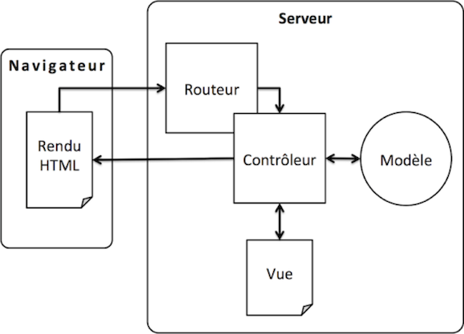
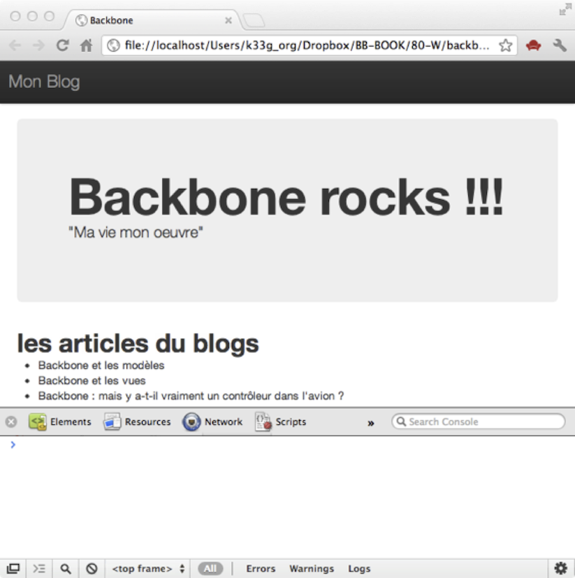
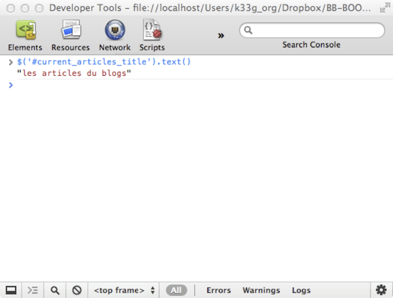
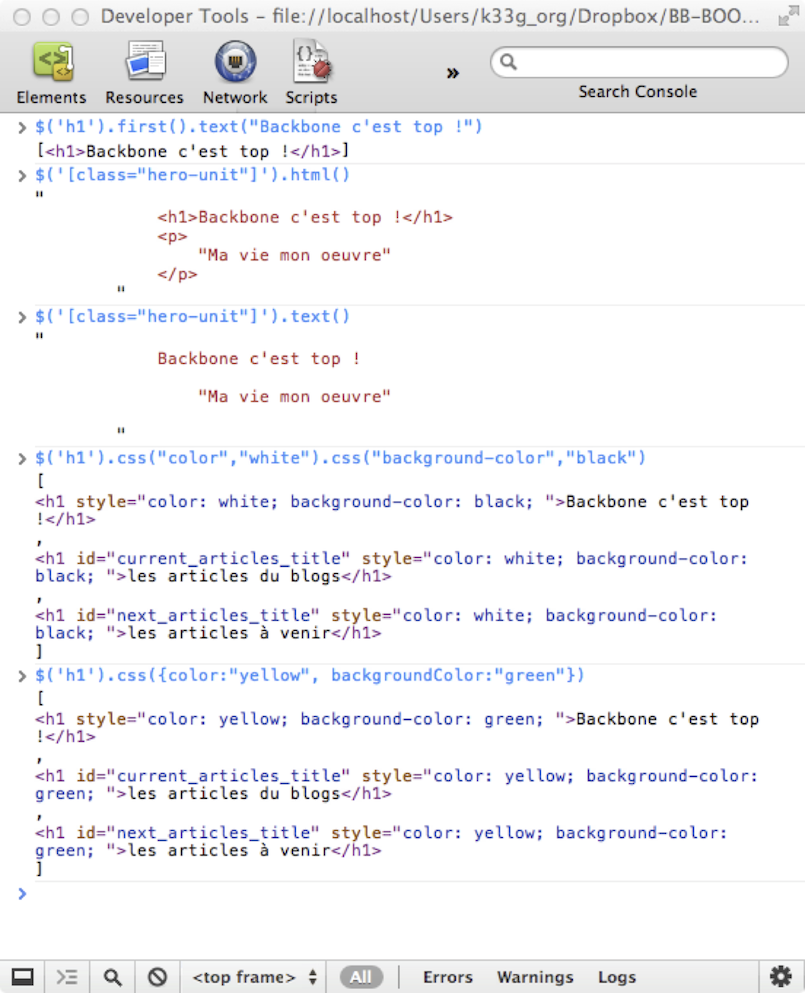
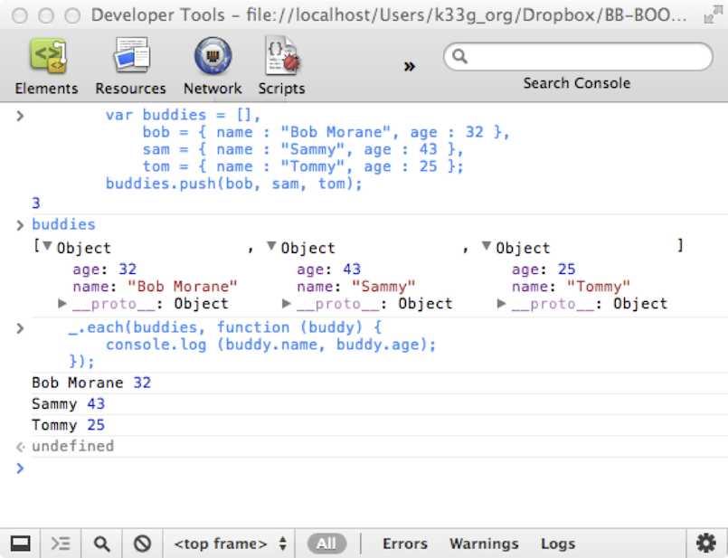
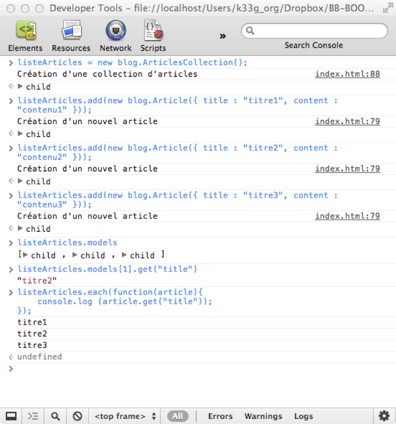

J'ai eu la prétention d'écrire un livre, et sur Backbone en plus ! En fait il n'existe peu de littérature française spécialisée sur des frameworks, qui plus est des framework javascript, alors que nos amis anglo-saxons écrivent sur Dart, Coffeescript, Backbone, etc. ... Au départ ce "bouquin" est un projet un peu fou, puisque j'ai même contacté les éditions Eyrolles (quand je vous disais que j'étais prétentieux ;) ). Et ils ont été d'accord ! Alors vous vous demandez pourquoi, finalement je publie ça de manière open source ?
Eh bien, écrire un livre est un travail de longue haleine, qui doit se faire dans la durée. D'un autre côté, les technologies, tout particulièrement ce qui gravite autour de javascript, progressent et changent à une allure vertigineuse. Mon constat est que, si je veux écrire tout ce que j'ai en tête, cela ne finira jamais, ou bien le contenu n'aura plus d'intérêt (obsolète) et qu'il me semble plus approprié de livrer déjà ce que j'ai "gratté" et de transformer ce livre en projet open-source.
Ainsi, ceux qui souhaite se mettre à Backbone, peuvent commencer dès maintenant (même si on ne m'a pas attendu, j'imagine qu'un peu de documentation en français devrait faire des heureux). Pour les autres s'ils souhaitent compléter, corriger, modifier, discuter, je me tiens à leur disposition. C'est pour cela que j'ai publier le contenu sur Github = ainsi vous avez l'opportunité de faire des pull requests (proposer des modifications) sur le contenu, ou créer des issues pour donner votre avis.
Je vous attends, j'espère que cela vous sera utile. Je m'adresse à tous les publics (les plus forts n'apprendront rien, mais peuvent contribuer). Ceux qui connaissent déjà Backbone peuvent directement passer au chapitre 04.
Je tiens à remercier très fortement et tout particulièrement, pour leur écoute, leurs conseils et leur relecture :
Remerciements aussi pour :
Sommaire
- A quoi sert Backbone.js ?
- Qu’est-ce qu’une « Webapp » ?
- Petit rappel à propos de MVC
Où nous allons voir pourquoi Backbone existe et quels sont les grands principes qu’il met en œuvre.
Ce chapitre est très court, il présente les origines de Backbone.js, le pourquoi de son utilisation, et enfin un rappel sur le patron de conception Modèle-Vue-Contrôleur, essentiel pour la bonne compréhension du framework.
Backbone est un framework javascript dédié à la création de Webapps en mode "Single Page Application". Il implémente le pattern MVC (L'acronyme signifie : Model View Controller / Modèle Vue Contrôleur) mais, et c'est là qu'est la nouveauté, côté client, plus précisément au sein de votre navigateur. Il reproduit les mécanismes des frameworks MVC côté serveur tels Ruby on Rails, CakePHP, Play!>Framework, ASP.Net MVC (avec Razor), ... Backbone a été écrit par Jeremy Ashkenas (le papa de Coffeescript et de Underscore) à l’origine pour ses propres besoin lors du développement du site DocumentCloud (http://www.documentcloud.org/home). Son idée était de créer un framework qui permette de structurer ses développements en s’appuyant justement sur MVC. Mais avant toute chose, faisons quelques petits rappels (ou découvertes ?).
Une “Webapp” n’a pas la même vocation qu’un site web même si les technologies mises en œuvre sont les mêmes. Elle a une réelle valeur applicative (gestion de catalogue produits, utilitaires, clients mails, agenda, etc. …) contrairement au site web qui le plus souvent est un medium de communication (journaux, blogs, etc. …). Assez rapidement, les technologies web ont été détournées pour tenter de remplacer les applications de gestion “client-riche” classique. Imaginez, le rêve des DSI : plus de déploiement, tout se passe dans le navigateur. Cependant, c’était sans compter les utilisateurs. Je me souviens avoir vu une gestion de catalogue il y a une dizaine d’années, en ASP 3 ou à chaque création d’article, il fallait attendre que toute la liste des articles se recharge. Ce qui avant en mode texte (sous dos) prenait 1 minute, venait de prendre 3 à 5 minutes dans la vue : 3 à 5 fois plus de temps ! Bravo la productivité ! Ensuite les technologies se sont cherchées longtemps pour tenter de remédier à ce problème : apparition des applets java, des ActiveX et là on commençait à retomber dans les travers de déploiements compliqués. Puis il y eu Flash, Flex et Silverlight, pas mal du tout il faut l’avouer, mais parallèlement le moteur javascript avait évolué, les navigateurs aussi et avec l’avènement du triptyque HTML5 – CSS3 – Javascript, un nouveau concept est apparu : la “Single Page Application” (probablement boosté par les mobiles et les tablettes … et Steve Jobs refusant que Flash/Air/Flex & Java s’installent sur l’iPhone & l’iPad). Mais qu’est donc une “Single Page Application” ? Il existe moult définitions, je vais donc vous donner la mienne, ensuite ce sera à vous de vous construire votre vision de “l’application web monopage”.
Une "Single Page Application est une application web qui embarque tous les éléments nécessaires à son fonctionnement dans une seule page HTML. Les scripts javascript liés seront chargés en même temps. Ensuite l’application web chargera les ressources nécessaires (généralement des données, des images …) à la demande en utilisant Ajax évitant ainsi tout rechargement de page et procurant une expérience utilisateur proche de celle que nous connaissions en mode “client-serveur”, voire meilleure dans certains cas. Ces webapps nouvelle génération peuvent aussi fonctionner offline en profitant des possibilités des derniers navigateurs (localstorage).
Remarque : ce qui est amusant, c’est que dès 1999 ou 2000, Microsoft avait déjà introduit cette possibilité avec Internet Explorer 4 qui intégrait une applet Java (si si !) qui permettait de faire du Remote Protocol Call d’une page html vers le serveur sans recharger la page et en s’abonnant en javascript à l’évènement de retour (à vérifier, c’est loin, tout ça). Mais ce fut éclipsé par l’apparente simplicité de mise en œuvre des ActiveX (Flash était alors utilisée principalement pour de l’animation, mais permettait aussi ce genre d’artifice).
Tout ça c’est bien beau, mais vous savez comme moi qu’un code HTML+JS (+CSS) peut rapidement devenir un plat de spaghettis impossible à maintenir, pour les autres mais pour vous aussi (retournez dans votre code 6 mois plus tard ;)). Il faut donc s’astreindre à des règles et s’équiper des bons outils afin de se faciliter la tâche, ne pas avoir à réinventer la poudre à chaque fois et pouvoir coder des applications robustes facilement modifiables (faciles à corriger, faciles à faire évoluer). Et si en plus vous pouvez vous faire plaisir …
C’est de ce constat qu’est parti Jeremy Ashkenas, et c’est en mettant en pratique les préceptes depuis longtemps éprouvés de MVC qu’il a conçu Backbone, pour répondre à une problématique existante, ce qui le rend d’autant plus légitime. Rafraîchissons donc un peu notre mémoire à propos de MVC.
Remarque : pour les lecteurs qui ne connaitraient pas ce concept, ne refermez pas le livre tout de suite, vous verrez avec les exemples pratiques que le concept est simple et facilement assimilable. Donc si les quelques paragraphes théoriques qui suivent vous semblent obscurs, je vous promet que dans quelques chapitres vous aurez tout compris.
MVC un pattern (modèle) de programmation utilisé pour développer des applications de manière structurée et organisée. Le pattern MVC, comme tous les patterns, cadre votre façon de développer. Son objectif particulier est de séparer les responsabilités de vos "bouts" de codes en les regroupant selon 3 rôles (responsabilités), donc le modèle, la vue et le contrôleur. Détaillons-les :
AVERTISSEMENT 1 : C’est la lisibilité qui importe. Il peut y avoir des interprétations différentes du modèle MVC quant aux responsabilités de ses composants. Par exemple, est-ce le modèle qui se sauvegarde lui-même ou est-ce un contrôleur qui se chargera de la persistance ? Peu importe (ce sont des querelles de chapelle), gardons juste à l'esprit qu'il y a trois grands modes de classement de nos objets et que l'important c'est d'avoir un code propre, structuré et maintenable (Dans 6 mois, vous devez être capables de relire votre code).
AVERTISSEMENT 2 : La difficulté n’est plus de mise. A l'attention des réfugiés de STRUTS. Mon "1er contact" avec MVC a été avec STRUTS. J'ai trouvé l'expérience peu concluante (expérience développeur désastreuse) et je suis retourné faire de l'ASP.Net "à la souris" (c'était avant 2005). Si certains d'entre vous se sont éloignés de la technique et ont des velléités de s'y remettre mais sont effrayés par MVC, je les rassure tout de suite, les développeurs nous ont enfin "concoctés" des frameworks simples et faciles à mettre en œuvre tels :
- ASP.Net MVC avec le moteur de template Razor
- Play!>Framework
- Express.js (avec nodeJS)
- Et beaucoup d'autres
Backbone.js respecte ce principe. Donc n'ayez pas peur, cela va être facile ;)
L'interprétation de MVC par Backbone est un peu particulière et les développeurs Java, .Net, PHP, Ruby, Python etc. ... pourraient être surpris. Mais, passons donc à quelques explications.
Backbone "embarque" plusieurs composants qui vont nous permettre d'organiser notre webapp selon les "préceptes" MVC et simplifier les communications avec le serveur (avec le code applicatif côté serveur).
Voyons l'interprétation que fait Backbone du modèle MVC :
Backbone.Model) représente les données qui vont interagir avec votre code "backend" (côté serveur) via des requêtes Ajax. Ceux sont eux qui auront la responsabilité de la logique métier et de la validations des données.Backbone.View) n'est pas complètement une vue au sens où on l'entend habituellement (couche présentation). Dans le cas qui nous intéresse, la "vraie" vue est un fragment de code "natif" HTML dans la page web qui s'affiche dans le navigateur (il y a donc plusieurs vues dans une même page). Et Backbone.View est en fait un Contrôleur de vues (1) (vous verrez, ce sera plus facile à appréhender en le codant) qui va ordonnancer les évènements et interaction au sein de la page web.(1) : c'est une interprétation très personnelle, c'est discutable, je reste à votre disposition
Pour résumer, avec un parallèle avec du MVC dit "classique", nous avons :
Backbone.ModelBackbone.ViewMais ce n'est pas fini ! Backbone apporte 3 composants supplémentaires :
Backbone.Router, qui écoute/surveille les changements d'URL (dans la barre d'url du navigateur, lors d'un clic sur un lien, ...) et qui fait le lien avec les Backbone.Model(s) et les Backbone.View(s).Backbone.Collection, des collections de modèles avec des méthodes pour "travailler" avec ceux-ci (each, filter, map, ...)Backbone.sync, que l'on pourrait comparer à une couche middleware, qui va permettre à nos modèles de communiquer avec le serveur. C'est Backbone.sync qui va faire les requêtes Ajax au serveur et "remonter" les résultats aux modèles.
Figure 1-1. MVC Vision "Back-End"
Figure 1-2. MVC Vision "Front-End"
//TODO:Tout ceci vous paraît bien théorique ? Alors passons tout de suite à la pratique.
Sommaire
- Les prérequis & IDE pour faire fonctionner Backbone
- jQuery en 15 minutes
- Underscore.js en 10 minutes
Où nous allons lister les éléments nécessaires pour installer Backbone et commencer à développer avec.
Le plus frustrant lorsque l'on débute la lecture d'un ouvrage informatique dans l'optique de s'auto former c'est que l'on est obligé de lire de nombreux chapitres avant de pouvoir commencer à s'y mettre. Je vais donc tenter de vous faire faire un 1er tour de Backbone.js en 20 minutes pour que vous en saisissiez rapidement la "substantifique moelle". Mais avant d’utiliser Backbone, quelques prérequis sont nécessaires.
Backbone a besoin au minimum de deux autres frameworks javascript pour fonctionner :
Nous verrons dans quelques chapitres qu'il est tout à fait possible de "marier" d'autres frameworks javascript à Backbone pour :
Remarque : Il est possible d'utiliser Zepto.js à la place de jQuery, Zepto fonctionne à l'identique de jQuery mais il est dédié principalement aux navigateurs mobiles et est beaucoup plus léger que jQuery (avantageux sur un mobile), cependant vous n'avez plus la garantie que votre code fonctionne dans d'autres navigateurs (Zepto "marchera" très bien sous Chrome, Safari et Firefox).
Pour coder choisissez l'éditeur de code avec lequel vous vous sentez le plus à l'aise. Ils ont tous leurs spécificités, ils sont gratuits, open-source ou payants. Certains "puristes" utilisent même Vim ou Emacs. Je vous en livre ici quelques-uns que j'ai trouvé agréables à utiliser si vous n'avez pas déjà fait votre choix :
Vous voyez, il y en a pour tous les goûts. En ce qui me concerne j'utilise essentiellement Webstorm ou SublimeText.
Le navigateur le plus agréable, selon moi, à utiliser pour faire du développement Web est certainement Chrome (C'est un avis très personnel, donc amis utilisateurs de Firefox ne m'en veuillez pas). En effet Chrome propose une console d'administration particulièrement puissante. C'est ce que je vais utiliser, rien ne vous empêche d'utiliser votre navigateur préféré. Par contre, que cela ne vous dispense pas d'aller tester régulièrement votre code sous d'autres navigateurs.
Maintenant que nous sommes “outillés” (un éditeur de code et un navigateur) nous allons pouvoir initialiser notre environnement de développement.
backbone001libs avec un sous-répertoire vendorsNous copierons les frameworks javascript dans vendors.
CONSEIL : Utilisez les version non minifiées des fichiers. Il est toujours intéressant de pouvoir lire le code source des frameworks lorsqu'ils sont bien documentés, ce qui est le cas de Backbone et Underscore, n'hésitez pas à aller mettre le nez dedans, c'est instructif et ces 2 frameworks sont très lisibles, même pour des débutants.
Nous allons aussi récupérer le framework css TwitterBootstrap qui nous permettra de faire de "jolies" pages sans effort. Ce n'est pas du tout obligatoire, mais c'est toujours plus satisfaisant d'avoir une belle page d'exemple. : http://twitter.github.com/bootstrap/. Téléchargez bootstrap.zip, "dé-zippez" le fichier et copiez le répertoire bootstrap dans votre répertoire vendors.
A la racine de votre répertoire de travail, créez une page index.html avec le code suivant :
<!DOCTYPE html>
<html>
<head>
<meta http-equiv="Content-Type" content="text/html; charset=utf-8">
<title>Backbone</title>
<!-- === Styles Twitter Bootstrap -->
<link href="libs/vendors/bootstrap/css/bootstrap.css" rel="stylesheet">
<link href="libs/vendors/bootstrap/css/bootstrap-responsive.css" rel="stylesheet">
</head>
<!-- === ici votre IHM === -->
<body>
</body>
<!-- === Références aux Frameworks === -->
<script src="libs/vendors/jquery-1.7.2.js"></script>
<script src="libs/vendors/underscore.js"></script>
<script src="libs/vendors/backbone.js"></script>
<!-- === ici votre code applicatif === -->
<script>
</script>
</html>A ce niveau vous devriez avoir un squelette de projet fonctionnel avec l'arborescence suivante :

Les deux paragraphes qui suivent ne sont que pour ceux d'entre vous qui ne connaissent ni jQuery ni Underscore. Ces paragraphes n'ont pas la prétention de vous apprendre ces outils, mais vous donneront les bases nécessaires pour vous en servir, pour comprendre leur utilité et pour vous donner envie d'aller plus loin. Les autres (ceux qui connaissent déjà), passez directement au § "1er contact … avec Backbone".
JQuery est un framework javascript initialement crée par John Resig qui vous permet de prendre le contrôle de votre page HTML. Voyons tout de suite comment nous en servir. Dans notre toute nouvelle page index.html, préparons un peu notre bac à sable et saisissons le code suivant :
<!DOCTYPE html>
<html>
<head>
<meta http-equiv="Content-Type" content="text/html; charset=utf-8">
<title>Backbone</title>
<!-- === Styles Twitter Bootstrap -->
<link href="libs/vendors/bootstrap/css/bootstrap.css" rel="stylesheet">
<!-- === à insérer entre les 2 <link> === -->
<style>
body {
padding-top: 60px; /* 60px pour mettre un peu d'espace entre la barre de titre et le contenu */
padding-bottom: 40px;
}
</style>
<link href="libs/vendors/bootstrap/css/bootstrap-responsive.css" rel="stylesheet">
</head>
<!-- === ici votre IHM === -->
<body>
<!--
les classe css "navbar navbar-fixed-top", "navbar-inner", "container", "brand", "hero-unit"
viennent de la feuille de style "twitter bootstrap "
-->
<div class="navbar navbar-fixed-top">
<div class="navbar-inner">
<div class="container">
<a class="brand">Mon Blog</a>
</div>
</div>
</div>
<div class="container">
<div class="hero-unit">
<h1>Backbone rocks !!!</h1>
<p>
"Ma vie mon oeuvre"
</p>
</div>
<div id="articles_box">
<h1 id="current_articles_title">les articles du blogs</h1>
<ul id="current_articles_list">
<li>Backbone et les modèles</li>
<li>Backbone et les vues</li>
<li>Backbone : mais y a-t-il vraiment un contrôleur dans l'avion ?</li>
</ul>
<h1 id="next_articles_title">les articles à venir</h1>
<ul id="next_articles_list">
<li>Backbone et le localstorage</li>
<li>Backbone.sync : comment ça marche</li>
</ul>
</div>
</div>
</body>
<!-- === Références aux Frameworks === -->
<script src="libs/vendors/jquery-1.7.2.js"></script>
<script src="libs/vendors/underscore.js"></script>
<script src="libs/vendors/backbone.js"></script>
<!-- === ici votre code applicatif === -->
<script>
</script>
</html>Une fois votre page terminée, sauvegardez là et ouvrez là dans votre navigateur préféré (qui je le rappelle, pour des raisons purement pédagogique est Chrome) :

Notez au passage la qualité graphique de votre page ;), tout ça sans trop d'efforts, grâce à TwitterBootstrap.
Dans un premier temps, ouvrez la console de Chrome (ou Safari) : faite un clic droit sur la page et sélectionner "Inspect Element" (ou "Inspecter l'élément). Pour les aficionados de Firefox : utilisez les menus : Tools/Web Developer/Web Console. Vous devriez obtenir ceci (cliquez sur le bouton "Console" si nécessaire :

Je voudrais la liste de mes titres <H1> : dans la console, saisir : $('h1'), validez, et vous obtenez un tableau (Array au sens javascript) des nodes html de type <H1> présentes dans votre page html :

Je voudrais le texte du titre <H1> dont l'id est "current_articles_title" : dans la console, saisir : $('#current_articles_title').text(). L'identifiant étant unique, en fait le type de la node est peu important :

Mais comment dois-je faire pour avoir le texte du premier <H1> de ma page, il n'a pas d'id ?!?. Tout simplement, en utilisant la commande suivante : $('h1').first().text() :

Les commandes sont toujours à saisir dans la console du navigateur. Je voudrais :
$('h1').first().text("Backbone c'est top !"), attention pensez bien au first() sinon vous allez changer tous les textes de tous les H1 de la page.class="hero-unit") : $('[class="hero-unit"]').html(), notez bien que $('[class="hero-unit"]').text() ne retourne pas le même résultat. On peut aussi écrire ceci plus simplement : $('.hero-unit').html() : le "." correspond à une classe css, comme le "#" permet de rechercher un élément par son id.$('h1').css("color","white").css("background-color","black"), vous voyez que vous pouvez faire des appels chaînés, mais une autre possibilité serait la suivante : $('h1').css({color:"yellow", backgroundColor:"green"})

Je voudrais :
UL) : $('ul').eq(1).attr("id"), je cherche la liste d'index 1 (le 1er élément possède l'index 0).LI) de la liste dont l'id est "next_articles_list" et obtenir leur texte : $('#next_articles_list').find('li').each(function (index) { console.log( $(this).text() ); })$('<li>Templating et Backbone</li>').appendTo('#next_articles_list')$('#current_articles_list').hide()$('#current_articles_list').show()$('#current_articles_list').hide('slow')$('#current_articles_list').show('fast')
//À traiterSi vous devez utiliser plusieurs fois le même élément de votre page : par exemple $('#current_articles_list'), sachez qu'à chaque fois jQuery "interroge" le DOM. Pour des raisons de performances, il est conseillé d'affecter le résultat de la sélection à une variable que vous réutiliserez ensuite. De cette manière, le DOM n'est interrogé qu'une seule fois. Vous pouvez tester ceci dans la console :
var currArtList = $('#current_articles_list');
currArtList.hide('slow');
currArtList.show('fast');Il est intéressant (indispensable) d'avoir la garantie que son code javascript n'est exécuté qu'une seule fois la page HTML chargée dans son entièreté, surtout si ce code accède à des éléments du DOM. jQuery a une fonction pour ça : $(document).ready(handler) ou encore plus court : $(handler) où handler est une fonction. Mettez ce code dans la balise <script> de votre page index.html :
console.log("est-ce que le DOM est chargé ??? ", $('#current_articles_list'));
$(function (){
console.log("je suis sûr que le DOM est chargé ", $('#current_articles_list'));
});Puis ouvrez la page dans votre navigateur et activez la console :

Il semble que tous les éléments soient chargés correctement avec ou sans l’utilisation de la méthode ready() de jQuery. Vous avez du remarquer que j'avais déplacé mon code javascript et les références aux autres code javascript "en bas de ma page". Maintenant, déplacez <script src="libs/vendors/jquery-1.7.2.js"></script> et le code source que nous avons écrit au niveau du header (balise <head>) de la page, ce qui est plus "classique" et rechargez la page :

Et là on voit bien qu'au 1er appel $('#current_articles_list') jQuery ne trouve rien, puis une fois le DOM chargé, jQuery trouve la liste. J'ai mis mes codes en bas de page, pour des raisons de performances et c'est pour ça que cela "semblait" fonctionner même à l'extérieur de $(document).ready(handler), les éléments se chargeant plus rapidement, mais ça ne garantit rien, tout particulièrement lorsque votre page n’est plus en local. Donc n'oubliez jamais d'exécuter votre code au bon moment grâce à $(document).ready(handler), ... Et remettez quand même votre code en bas de page ;).
Vous venez de voir une infime partie des possibilités de jQuery, mais cela vous donne déjà un aperçu et vous permet de commencer à jouer avec et aller plus loin. jQuery permet aussi de faire des requêtes AJAX (http) vers des serveurs web, mais nous verrons cela un peu plus tard.
//TODO: traiter la notion d’id versus la notion de nameUnderscore est un framework javascript (par le créateur de Backbone) qui apporte de nombreuses fonctionnalités pour faire des traitements sur des tableaux de valeurs (Array) , des collections (tableaux d'objet). Certaines de ces fonctionnalités existent en javascript, mais uniquement dans sa dernière version, alors qu'avec Underscore vous aurez la garantie qu'elles s'exécutent sur tous les navigateurs. Mais Underscore, ce sont aussi des fonctionnalités autour des fonctions et des objets (là aussi, le framework vous procure les possibilités de la dernière version de javascript quel que soit votre navigateur ... ou presque, je n'ai pas testé sous IE6) et autres utilitaires, tels le templating. Je vous engage à aller sur le site, la documentation est particulièrement bien faite.
Backbone utilise et encapsule de nombreuses fonctionnalités d'Underscore (Collection, modèle objet, ...) donc vous n'aurez pas forcément l'obligation d'utiliser Underscore directement. Je vous livre cependant quelques exemples, car cette puissante librairie peut vous aider sur d'autres projets pas forcément dédiés Backbone. Pour les tester, nous continuons avec la console de notre navigateur (toujours avec notre page index.html).
Commencez par saisir ceci :
var buddies = [],
bob = { name : "Bob Morane", age : 32 },
sam = { name : "Sammy", age : 43 },
tom = { name : "Tommy", age : 25 };
buddies.push(bob, sam, tom);Nous avons donc un tableau de 3 objets :

Je souhaite maintenant parcourir le tableau d’objets et afficher les informations de chacun d’eux. Pour cela utilisez la commande each() de la manière suivante :
_.each(buddies, function (buddy) {
console.log (buddy.name, buddy.age);
});Et vous obtiendrez ceci :

Je voudrais maintenant les “buddies” dont l’âge est inférieur à 43 ans. Nous allons utiliser la commande filter() :
_.filter(buddies, function (filteredBuddies) {
return filteredBuddies.age < 43;
});Et nous obtenons bien :

Je vous en parle maintenant, car ce "bijou" va nous servir très rapidement. Je voudrais générer une liste au sens HTML (<ul><li></li></ul>) à partir de mon tableau d'objets buddies. Nous allons donc créer une variable “template” (un peu comme une page JSP ou ASP) :
var templateList =
"<ul> <% _.each(buddies, function (buddy) { %>\
<li><%= buddy.name %> : <%= buddy.age %> </li>\
<% }); %>\
</ul>";Que nous utiliserons de cette façon (nous passons à la méthode le template et les données):
_.template(templateList, buddies);Pour le résultat suivant :

Voilà, nous avons fait un rapide tour d’horizon des éléments qui nous seront nécessaires par la suite. Nous pouvons enfin commencer.
Sommaire
- Premier modèle
- Première collection
- Première vue & premier template
Nous allons faire un premier exemple Backbone pas à pas, même sans connaître le framework. Cela va permettre de « désacraliser » la bête et de mettre un peu de liant avec tout ce que nous avons vu précédemment. Puis nous passerons dans le détail tous les composants de Backbone dans les chapitres qui suivront.
Voilà, il est temps de s'y mettre. L'application que nous allons réaliser avec Backbone tout au long de cet ouvrage va être un Blog, auquel nous ajouterons au fur et à mesure des fonctionnalités pour finalement le transformer en CMS (Content Management System). Je vous l'accorde ce n'est pas très original, mais cela répond à des problématiques classiques (récurrentes ?) dans notre vie "d'informaticien" et cela a le mérite d'avoir un aspect pratique et utile. Notre point de départ va être un blog que nous agrémenterons de fonctionnalités au fil des chapitres.
Nous allons faire ici un exemple très rapide, sans forcément entrer dans le détail ni mettre en œuvre les bonnes pratiques d'organisation de code. Cet exercice est là pour démontrer la simplicité d'utilisation, et le code devrait être suffisamment simple pour se passer d'explications. Donc, "pas de panique !", laissez-vous guider, dans 15 minutes vous aurez une 1ère ébauche.
Nous allons utiliser notre même page index.html, mais faisons un peu de ménage à l'intérieur avant de commencer :
<!DOCTYPE html>
<html>
<head>
<meta http-equiv="Content-Type" content="text/html; charset=utf-8">
<title>Backbone</title>
<link href="libs/vendors/bootstrap/css/bootstrap.css" rel="stylesheet">
<style>
body {
padding-top: 60px;
padding-bottom: 40px;
}
</style>
<link href="libs/vendors/bootstrap/css/bootstrap-responsive.css" rel="stylesheet">
</head>
<body>
<div class="navbar navbar-fixed-top">
<div class="navbar-inner">
<div class="container">
<a class="brand">Mon Blog</a>
</div>
</div>
</div>
<div class="container">
<div class="hero-unit">
<h1>Backbone rocks !!!</h1>
</div>
</div>
</body>
<!-- === Références aux Frameworks === -->
<script src="libs/vendors/jquery-1.7.2.js"></script>
<script src="libs/vendors/underscore.js"></script>
<script src="libs/vendors/backbone.js"></script>
<script>
$(function (){
});
</script>
</html>L'essentiel de notre travail va se passer dans la balise <script></script> en bas de page. De quoi avons-nous besoin dans un blog ?
Pour le moment nous allons nous concentrer uniquement sur les articles, notre objectif sera le suivant : "Afficher une liste d'articles sur la page principale".
Dans la balise <script></script> saisissez le code suivant :
Définition d’un modèle Article
<script>
$(function (){
//permettra d'accéder à nos variables en mode console
window.blog = {};
/*--- Modèle article ---*/
// une "sorte" de classe Article
blog.Article = Backbone.Model.extend({
//les valeurs par défaut d'un article
defaults : {
title : "titre de l'article",
content : "contenu de l'article",
publicationDate : new Date()
},
// s'exécute à la création d'un article
initialize : function () {
console.log ("Création d'un nouvel article")
}
});
});
</script>Sauvegarder, relancer dans le navigateur, et allez dans la console :
myFirstArticle = new blog.Article()myFirstArticle.get("title")myFirstArticle.get("content")myFirstArticle.set("title","MON TITRE") ou myFirstArticle.set({title : "MON TITRE"})myFirstArticle.set({title : "MON TITRE ...", content : "blablabla"})mySecondArticle = new blog.Article({title : "MON AUTRE ARTICLE", content : "lore ipsum ..."})
Vous venez donc de voir que nous avons définis le modèle article “un peu” comme une classe qui hériterait (extend) de la classe Backbone.Model, que nous lui avons défini des valeurs par défauts (defaults), et affecté une méthode d’initialisation (initialize). Et qu’il existe un système de getter et de setter un peu particulier (model.get(property_name), model.set(property_name, value)), mais nous verrons ultérieurement dans le détail comment fonctionnent les modèles.
Remarque : le modèle de programmation de Javascript est bien orienté objet, mais n’est pas orienté “classe” comme peut l’être par exemple Java. Cela peut déstabiliser au départ, mais je vous engage à lire [REF VERS ARTICLE] à ce propos.
Nous allons maintenant définir une collection qui nous aidera à gérer nos articles. Donc, à la suite du modèle Article saisissez le code suivant :
Définition d’une collection d’articles
/*--- Collection d'articles ---*/
blog.ArticlesCollection = Backbone.Collection.extend({
model : blog.Article,
initialize : function () {
console.log ("Création d'une collection d'articles")
}
});Notez qu'il faut bien préciser le type de modèle adressé par la collection (on pourrait dire que la collection est typée).
Sauvegarder, relancer dans le navigateur, et retournez à nouveau dans la console et saisissez les commandes suivantes :
Création de la collection :
listeArticles = new blog.ArticlesCollection()Ajout d’articles à la collection :
listeArticles.add(new blog.Article({ title : "titre1", content : "contenu1" }))
listeArticles.add(new blog.Article({ title : "titre2", content : "contenu2" }))
listeArticles.add(new blog.Article({ title : "titre3", content : "contenu3" }))Nous venons donc d'ajouter 3 articles à notre collection,
listeArticles.models vous obtiendrez un tableau de modèleslisteArticles.models[1].get("title")listeArticles.each(function(article){ console.log (article.get("title")); });Cela vous rappelle quelque chose ? Le
eachde Backbone est implémenté grâce à Underscore.

Maintenant que nous avons de quoi gérer nos données, il est temps de les afficher dans notre page HTML.
Avant toute chose, allons ajouter dans notre code javascript (en bas de la page HTML) le bout de code qui va créer les articles et la collection d'articles pour nous éviter de tout re-saisir à chaque fois. Donc après le code de la collection, ajoutez ceci :
/*--- bootstrap ---*/
blog.listeArticles = new blog.ArticlesCollection();
blog.listeArticles.add(new blog.Article({ title : "titre1", content : "contenu1" }));
blog.listeArticles.add(new blog.Article({ title : "titre2", content : "contenu2" }));
blog.listeArticles.add(new blog.Article({ title : "titre3", content : "contenu3" }));
blog.listeArticles.add(new blog.Article({ title : "titre4", content : "contenu4" }));
blog.listeArticles.add(new blog.Article({ title : "titre5", content : "contenu5" }));Ensuite dans le code html, ajoutons le template de notre vue et le div dans lequel les données seront affichées :
<% _.each(articles, function(article) { %>
<h1><%= article.title %></h1>
<h6><%= article.publicationDate %></h6>
<p><%= article.content %></p>
<% }); %>donc :
<body>
<div class="navbar navbar-fixed-top">
<div class="navbar-inner">
<div class="container">
<a class="brand">Mon Blog</a>
</div>
</div>
</div>
<div class="container">
<div class="hero-unit">
<h1>Backbone rocks !!!</h1>
</div>
<!-- ìci notre template -->
<script type="text/template" id="articles-collection-template">
<% _.each(articles, function(article) { %>
<h1><%= article.title %></h1>
<h6><%= article.publicationDate %></h6>
<p><%= article.content %></p>
<% }); %>
</script>
<!-- les données seront affichées ici -->
<div id="articles-collection-container"></div>
</div>
</body>Puis dans le code javascript, à la suite du code de la collection et avant le code de chargement des données (bootstrap), ajoutez le code de la vue Backbone :
/*--- Vues ---*/
blog.ArticlesView = Backbone.View.extend({
el : $("#articles-collection-container"),
initialize : function () {
this.template = _.template($("#articles-collection-template").html());
},
render : function () {
var renderedContent = this.template({ articles : this.collection.toJSON() });
$(this.el).html(renderedContent);
return this;
}
});Eh bien, nous avons défini une vue avec :
el (pour élément) à laquelle on “attache” le <div> dont l’id est “articles-collection-container”. C’est dans ce <div> que seront affichés les articlesinitialize, qui affecte une méthode template() à l’instance de la vue en lui précisant que nous utiliserons le modèle de code html définit dans le <div> dont l’id est “articles-collection-template”render, qui va passer les données en paramètre à la méthode template() puis les afficher dans la pageSauvegarder, relancer dans le navigateur, et retournez encore dans la console pour saisir les commandes suivantes :
articlesView = new blog.ArticlesView({ collection : blog.listeArticles }) à laquelle nous passons la collection d’articles en paramètrearticlesView.render()Et là la "magie" de Backbone s'opère, vos articles s'affichent instantanément dans votre page : :)

Remarque : Notez bien que la collection doit être transformée en chaîne JSON pour être interprétée dans le template (
this.template({ articles : this.collection.toJSON() })) et que nous avons nommé le paramètrearticlespour faire le lien avec le template (_.each(articles, function(article) {}).
A la fin de la méthode initialize de la vue, ajoutez le code suivant :
/*--- binding ---*/
_.bindAll(this, 'render');
this.collection.bind('change', this.render);
this.collection.bind('add', this.render);
this.collection.bind('remove', this.render);
/*---------------*/Nous venons "d'expliquer" à Backbone, qu'à chaque changement dans la collection, la vue doit rafraîchir son contenu. _.bindAll est une méthode d'Underscore (http://documentcloud.github.com/underscore/#bind) qui permet de conserver le contexte initial, c'est à dire : quel que soit "l'endroit" d'où l'on appelle la méthode render, ce sera bien l'instance de la vue (attachée à this) qui sera utilisée.
//TODO: à expliquer plus simplementUne dernière fois, sauvegarder, relancer le navigateur, et retournez encore dans la console pour saisir les commandes suivantes :
articlesView = new blog.ArticlesView({ collection : blog.listeArticles })articlesView.render()blog.listeArticles.add(new blog.Article({title:"Hello", content:"Hello World"}))Et là, magique ! : L’affichage s'est actualisé tout seul :
Si vous avez bien suivi, j'ai fait une grossière erreur (je l’ai laissé volontairement, car c'est une erreur que j'ai déjà faite, et il n'est donc pas impossible que d'autres la fassent), la date de publication ne change pas ! En effet, je l'affecte dans les valeurs par défaut qui ne sont "settées" qu'une seule et unique fois lors de la définition de la "pseudo" classe Backbone.Model. Il faut donc initialiser la date de publication lors de l'instanciation du modèle, et ce dans la méthode initialize(). Modifiez donc le code du modèle de la manière suivante :
/*--- Modèle article ---*/
blog.Article = Backbone.Model.extend({ // une "sorte" de classe Article
defaults : { //les valeurs par défaut d'un article
title : "titre de l'article",
content : "contenu de l'article",
//publicationDate : null
},
initialize : function () { // s'exécute à la création d'un article
console.log ("Création d'un nouvel article");
this.set("publicationDate",new Date());
}
});Refaites les manipulations précédentes, et là (si vous avez laissez suffisamment de temps entre la création des articles), vous pourrez noter que la date est bien mise à jour :


Remarque : la propriété date n’existe plus dans les valeurs par défaut, elle est créée à l’instanciation du modèle lors de l’appel de
this.set("publicationDate",new Date())dans la méthodeinitialize. De la même manière, vous pouvez créer à la volée des propriétés “à posteriori” pour les instances des modèles.
Et voilà, l’initiation est terminée. Nous allons pouvoir passer “aux choses sérieuses” et découvrir jusqu’où nous pouvons “pousser” Backbone.
Le code final de votre page devrait ressembler à ceci :
<!DOCTYPE html>
<html>
<head>
<meta http-equiv="Content-Type" content="text/html; charset=utf-8">
<title>Backbone</title>
<link href="libs/vendors/bootstrap/css/bootstrap.css" rel="stylesheet">
<style>
body {
padding-top: 60px;
padding-bottom: 40px;
}
</style>
<link href="libs/vendors/bootstrap/css/bootstrap-responsive.css" rel="stylesheet">
</head>
<body>
<div class="navbar navbar-fixed-top">
<div class="navbar-inner">
<div class="container">
<a class="brand">Mon Blog</a>
</div>
</div>
</div>
<div class="container">
<div class="hero-unit">
<h1>Backbone rocks !!!</h1>
</div>
<!-- Template d'affichage des articles -->
<script type="text/template" id="articles-collection-template">
<% _.each(articles, function(article) { %>
<h1><%= article.title %></h1>
<h6><%= article.publicationDate %></h6>
<p><%= article.content %></p>
<% }); %>
</script>
<!-- div où seront affichés les articles -->
<div id="articles-collection-container"></div>
</div>
</body>
<!-- === Frameworks === -->
<script src="libs/vendors/jquery-1.7.2.js"></script>
<!--<script src="libs/vendors/bootstrap/js/bootstrap.js"></script>-->
<script src="libs/vendors/underscore.js"></script>
<script src="libs/vendors/backbone.js"></script>
<!-- === code applicatif === -->
<script>
$(function (){
window.blog = {};
/*--- Modèle article ---*/
blog.Article = Backbone.Model.extend({
defaults : {
title : "titre de l'article",
content : "contenu de l'article",
},
initialize : function () {
console.log ("Création d'un nouvel article");
this.set("publicationDate",new Date());
}
});
/*--- Collection d'articles ---*/
blog.ArticlesCollection = Backbone.Collection.extend({
model : blog.Article,
initialize : function () {
console.log ("Création d'une collection d'articles")
}
});
/*--- Vues ---*/
blog.ArticlesView = Backbone.View.extend({
el : $("#articles-collection-container"),
initialize : function () {
this.template = _.template($("#articles-collection-template").html());
/*--- binding ---*/
_.bindAll(this, 'render');
this.collection.bind('change', this.render);
this.collection.bind('add', this.render);
this.collection.bind('remove', this.render);
/*---------------*/
},
render : function () {
var renderedContent = this.template({ articles : this.collection.toJSON() });
$(this.el).html(renderedContent);
return this;
}
});
/*--- bootstrap ---*/
blog.listeArticles = new blog.ArticlesCollection();
blog.listeArticles.add(new blog.Article({ title : "titre1", content : "contenu1" }));
blog.listeArticles.add(new blog.Article({ title : "titre2", content : "contenu2" }));
blog.listeArticles.add(new blog.Article({ title : "titre3", content : "contenu3" }));
blog.listeArticles.add(new blog.Article({ title : "titre4", content : "contenu4" }));
blog.listeArticles.add(new blog.Article({ title : "titre5", content : "contenu5" }));
});
</script>
</html>